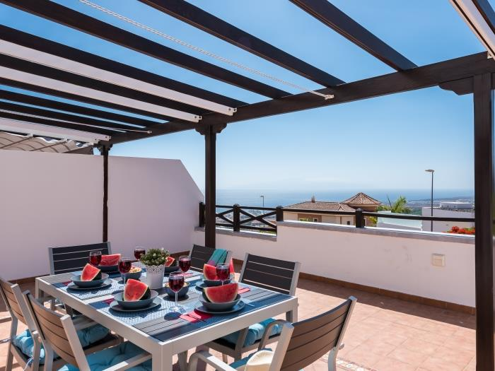
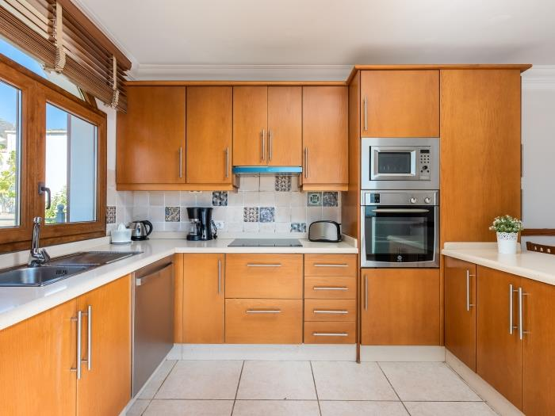
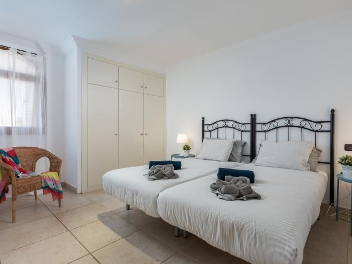
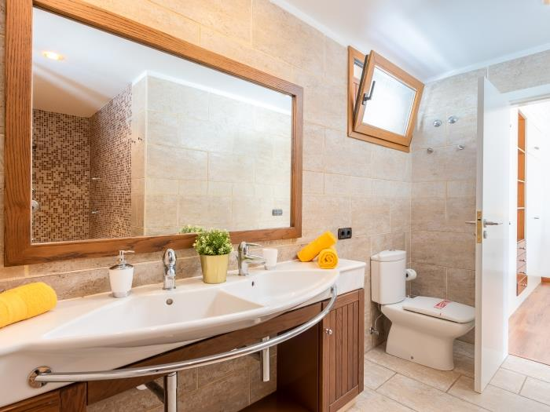
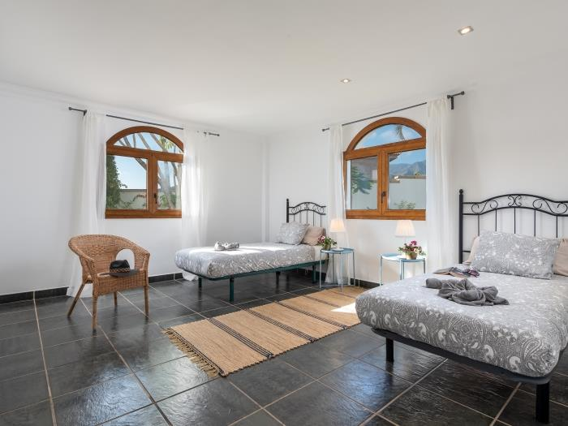
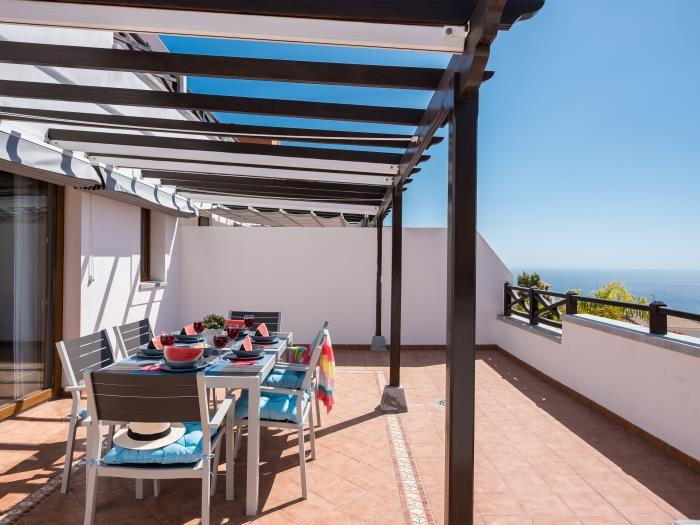
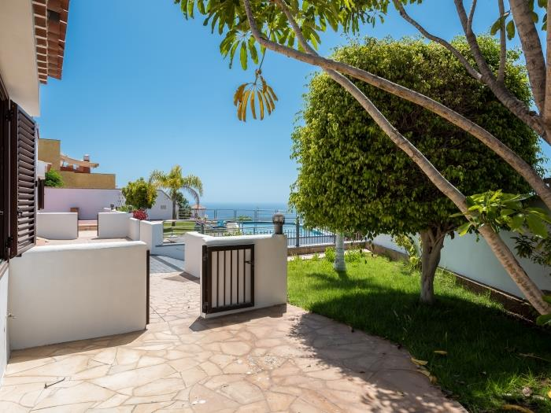

Torviscas Alto e' una delle zone residenziali piu' comode del sud di Tenerife: tranquilla, ben collegata, a breve distanza da spiagge, parchi acquatici, centri commerciali e una vasta scelta di ristoranti e locali per tutti i gusti. Questa villa e' la base perfetta per famiglie e gruppi che vogliono vivere la parte piu' animata di Tenerife senza rinunciare al relax di uno spazio privato.
Ampi spazi interni, giardino con zona barbecue e una posizione strategica rendono questa villa una scelta pratica e confortevole per un soggiorno di una o due settimane.
Siam Park, Aqua Club Termal, Las Veronicas, Hard Rock Cafe, Playa del Duque: tutte le attrazioni del sud di Tenerife raggiungibili in meno di 15 minuti.






La base operativa perfetta per esplorare tutto il meglio del sud di Tenerife: spiagge, parchi, ristoranti e vita notturna, con il comfort di una villa tutta per voi al rientro.
Contattaci per disponibilita' e prezzi
💬 Contattaci su WhatsApp